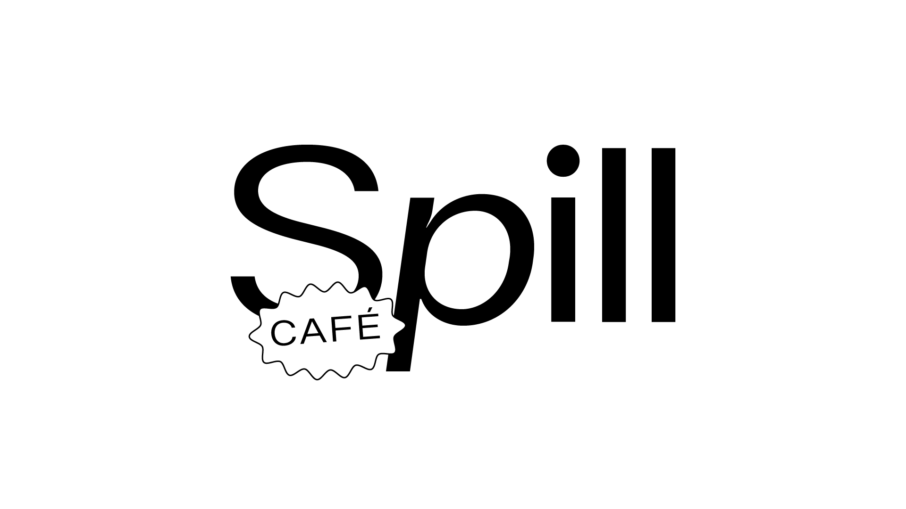
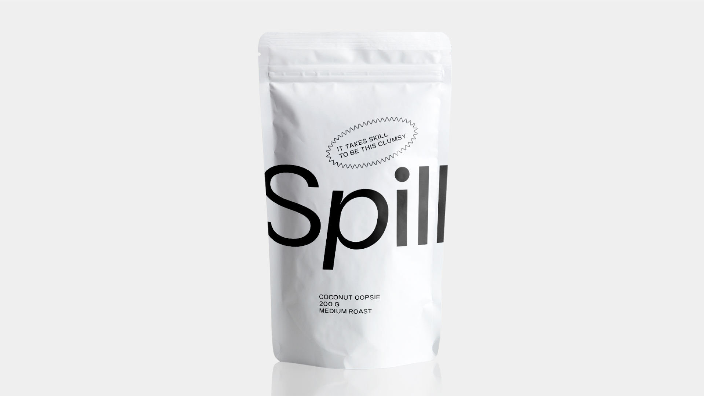
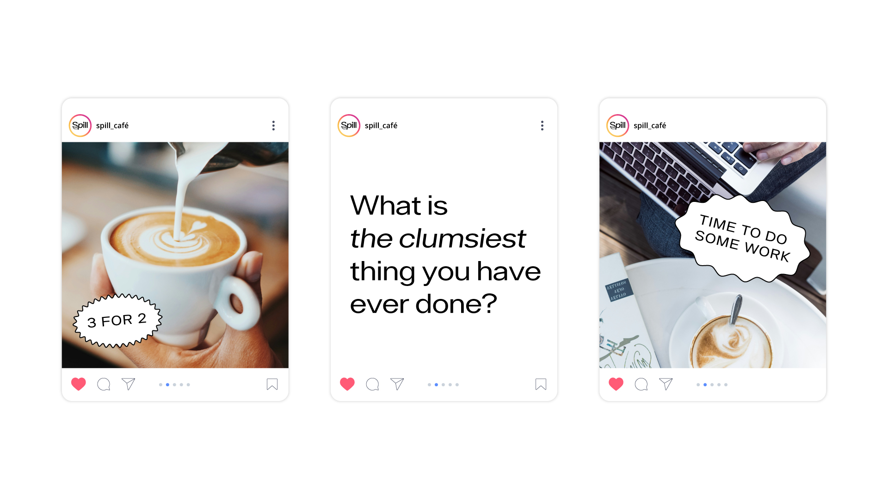

❮
❯
Spill
Project Type
Visual Identity & Packaging
Purpose
University Project
Software
Adobe Illustrator, Adobe Photoshop, Adobe Lightroom
Year
2024
Problem and Solution
Inspired by my own clumsiness, I created a café that celebrates this trait. To reflect this, I designed unique stickers that resonate with people who tend to be clumsy. Not to exclude the idea that clumsy people can, at the same time, be elegant and organized, I balanced it all out by pairing a white background with a black sans-serif font. Spill offers a welcoming space for everyone to enjoy and appreciate good coffee.
Fun Fact
The chosen font features ink traps, symbolizing the pouring of coffee when it spills